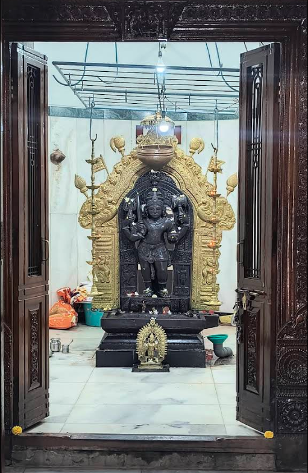

Ravalnath
Ravalnath is a highly venerated guardian deity, especially in the Konkan region (Goa, coastal Maharashtra) and parts of Karnataka. He is regarded as a fierce protector, safeguarding villages from disasters, witchcraft, and snakebites. Ravalnath is closely associated with the guardian aspect of Lord Shiva and is also called “Kshetrapala” (protector of the locality). He is especially revered as a Gramadevata, or village deity, and is known for his role in dispensing justice and maintaining social order.
Mythology & Significance
- Believed to have been born from the sacred fire of sage Jamadagni’s rage, with Maharishi Parshurama also playing a role in his origin.
- Considered both an incarnation and a fierce aspect of Shiva, sometimes identified as one of the Ashta Bhairavas (specifically “Ruru Bhairava”).
- Invoked for justice, protection, and support in times of conflict. Local legends often speak of him vanquishing demons and safeguarding the people from evil forces.
- Major shrines found in Pedne (Goa), Chandgadh (Kolhapur), and Otavane (Sawantwadi); worshippers believe these shrines collectively dispense justice for devotees.
Iconography
- Depicted as a warrior, holding a sword or trident, sometimes riding a horse, symbolizing martial prowess.
- The idol is usually south-facing, in keeping with ancient traditions.
- Worshipped especially during nighttime ceremonies, reflecting his role as a protector during vulnerable hours.